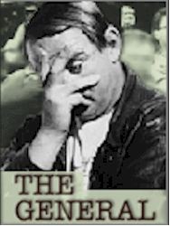

Contents | Features | Reviews | Books | Archives | Store |
 |
|
| Movie Credits | Buy It! |
The General
Review by Eddie Cockrell
Posted 18 December 1998
|  | Produced, Written and Directed by John Boorman Starring
Brendan Gleeson, Adrian Dunbar, |
There’s a lovely moment in this refreshingly self-assured and altogether magnificent new film from John Boorman in which the famously eccentric Irish criminal Martin Cahill (Brendan Gleeson) burgles a well-appointed home as the master sneaks away from his bedroom for a liaison down the hall and the lady of the house slumbers on with the criminal hovering inches from her face. Scored to the jauntily seductive Van Morrison/Richie Buckley composition "It Used to Be My Life," the audacious sequence -- made all the more dreamlike by the velvety anamorphic black and white cinematography of Seamus Deasy (the secret lies in it’s printing on color stock) -- is Boorman at his mystical, elegant best, taking the stuff of real-life legend and refracting it through his unique visual and storytelling sensibilities.
An eccentric and popular career recidivist in Dublin over the last 15 years or so, Cahill began as a cheeky youth (played by Neil Jordan’s Butcher Boy, Eamonn Owens, in dreamy, kinetic flashbacks that hark back to Boorman’s debut feature, the 1965 Dave Clarke Five romp Having a Wild Weekend [aka Catch Us If You Can]). As an adult, he cunningly plays up to the more marketable aspects of his individualistic nature, assembling a scrappy yet quirky gang and appearing in public swathed in a hooded parka and peeking through fingers spread over his homely yet genial face (Gleeson apparently looks much like Cahill in his prime). He also quickly develops a reputation for brazenness, reinforced by imaginatively planned heists of a seemingly impregnable jewel warehouse and an art collection that includes the only privately owned Vermeer (sequences that boldly mix agonizing tension and precocious wit). Stalked by his own private Javert in the form of the increasingly frustrated and weary Inspector Ned Kenny (Jon Voight, who starred for Boorman in Deliverance) and hounded by seemingly the entire Dublin constabulary, Cahill tries to lead as normal a life as is possible -- normal, that is, for a celebrated criminal who, with the blessing of his wife Frances (Maria Doyle Kennedy), starts another family with her sister Tina (Angeline Ball, in an entirely different set of Commitments).
Soon enough, Cahill’s fiercely independent nature runs him afoul of both the Irish Republican Army and the Ulster Volunteer Force and this inability and/or unwillingness to conform with the ongoing operations of fellow criminals -- not his friction with the police -- is the eventual cause of his downfall and 1994 murder (the slaying bookends the film).
If Gleeson looks at all familiar -- he’s a chameleon, that one -- he’s had prominent roles in Mel Gibson’s laborious yet mysteriously popular Braveheart (the trusty sidekick Hamish), I Went Down (the sideburned Bunny) and the thus-far distributorless Sweety Barrett. He’s also appeared in, among other films, Jim Sheridan’s The Field, Stephen Frears’ The Snapper and Neil Jordan’s Michael Collins. "The key phrase in discussions with John before we started this," he explains in the presskit, "was that we would humanize Cahill without romanticizing him." They’ve achieved that goal spectacularly, as Gleeson’s Martin is an impossible yet somehow entirely plausible study in contrasts, a distastefully shambling man who wanders around in a threadbare collection of t-shirts featuring pigs ("I Don’t Do Mornings," proclaims the most dignified one) and suffers from diabetes, yet is clearly adoring of and adored by both of his families -- when he’s not administering outlaw justice to an underling by nailing the poor man’s hand to a pool table (realizing that he wasn’t lying, Cahill accompanies him to the emergency room).
The supporting cast is uniformly good in service to Boorman’s vision, with Voight fine as the befuddled yet oddly compassionate Kenny (it sure is good to see the actor back in such mainstream projects as Heat, Mission: Impossible, John Grisham’s The Rainmaker, U-Turn, Enemy of the State and the upcoming Varsity Blues) and pungent local color in the persons of Adrian Dunbar (Hear My Song) and the fearless Sean McGinley (The Butcher Boy, Michael Collins, The Field -- most Irish actors have appeared numerous times with each other) as pivotal members of Cahill’s gang.
A triumph of mischievous intellectualism in the face of looming deadlines, legal hurdles and uncertain financing, The General was put together literally on the run after Boorman tabled his extensive pre-production work on a complicated adaptation of "The Lion, The Witch and The Wardrobe" and left A Simple Plan only weeks before the commencement of principal photography, apparently in exasperation over a funding snafu (as with many of history’s great filmmakers, he seems to carry huge passions for numerous projects like the rest of us juggle luggage -- most of which, including his legendary, ironically titled Broken Dream, have remained unrealized). Set against the travails of its making, the crafty energy of The General is even more remarkable, as characters and situations avoided for fear of legal repercussions result in a propulsive, fictionalized narrative thrust that is obviously surreal yet emotionally spot-on (a word on this: born in England, Boorman has lived for a quarter century in Ireland’s County Wicklow, and his fascination for the phenomenon represented by Cahill and his story seems to spring from an intertwined admiration for the robber’s perhaps unconsciously iconoclastic creed and an ongoing fascination with the society that spawned him; inevitably, there’s been some minor controversy in Ireland from those who see the movie perhaps too literally as a film about one man instead of a movie about the quirky magic of human impulse).
Perhaps the most important -- and certainly the most undervalued -- mind in moviemaking today, Boorman’s career is a rollercoaster of box office successes (Point Blank, Deliverance, Hope and Glory) and failures (the legendary Leo the Last -- to this day unavailable on videotape -- its unofficial sequel, Where the Heart Is, and the exasperatingly misunderstood Beyond Rangoon). Financial performance aside, these films are unified by a vision in which genre is subverted by the metaphysical. In every case the impact on the receptive viewer can be life-altering (or at the very least life-affirming), and it isn’t necessary to subscribe to this worldview to be moved and even changed by it.
Unique to the world of working filmmakers in both volume and precision, Boorman has written eloquently and in great detail on the overwhelming minutiae of picture making, the endless meetings and transcontinental flights in pursuit of funding for his passionate and uncompromising films (his diary on the making of The General, included in the presskit, deserves to be published, his journal on the production of The Emerald Forest was published under the painfully aware title "Money Into Light," and he co-edits a yearly forum for filmmakers called "Projections" -- which is essential reading).
He’s also brooded in print about losing the mainstream profile the sporadic success of his films has accorded him. Seen in this light, it isn’t too much of a stretch to see Martin Cahill as a surrogate Boorman, a cheerful iconoclast who is unrepentent precisely because he believes so strongly in the essential correctness of his actions (maybe it’s best not to take this analogy too far). In fact, that previously mentioned home invasion sequence was inspired by the thief’s actual burglary of the director’s home -- which netted, presumably among other things, a gold record for "Dueling Banjoes," the theme from Deliverance. It is this very emotional alchemy, conjured in a hurry after intense periods of study and meditation, which charge all of Boorman’s films with a disciplined yet unpredictable emotional power. If The General reflects the great man in graceful repose (he’s 68 and fretted in "Projections" seven years ago that he didn’t know how much more time he’d have to make the many movies that preoccupy his vibrant mind), the film also gives notice to the Hollywood establishment that John Boorman is still in admirable command of his provocative, inspirational and altogether astonishing storytelling powers.
Also read our coverage of the film at the Toronto International Film Festival.
Contents | Features | Reviews | Books | Archives | Store
Copyright © 1999 by Nitrate Productions, Inc. All Rights Reserved.